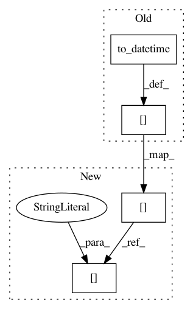

3cb00ac929a447e8a5bec0d684ed408008d9cc33,QUANTAXIS/QAFetch/QATdx.py,,QA_fetch_get_stock_day,#Any#Any#Any#Any#Any#Any#,72
Before Change
data["code"] = code
data["date_stamp"] = data["date"].apply(
lambda x: QA_util_date_stamp(x))
data["date"] = pd.to_datetime(data["date"])
data.set_index("date", drop=False, inplace=False)
data["date"] = data["date"].apply(lambda x: str(x)[0:10])
data = data.drop(["year", "month", "day", "hour",
"minute", "datetime"], axis=1)
data = pd.concat([data, info[["fenhong", "peigu", "peigujia",
"songzhuangu"]][data.index[0]:]], axis=1).fillna(0)
data["preclose"] = (data["close"].shift(1) * 10 - data["fenhong"] + data["peigu"]
* data["peigujia"]) / (10 + data["peigu"] + data["songzhuangu"])
data["adj"] = (data["preclose"].shift(-1) /
data["close"]).fillna(1).cumprod()
data["open"] = data["open"] / data["adj"]
data["high"] = data["high"] / data["adj"]
data["low"] = data["low"] / data["adj"]
data["close"] = data["close"] / data["adj"]
data["preclose"] = data["preclose"] / data["adj"]
return data[data["open"] != 0][start_date:end_date]
def QA_fetch_get_stock_min(code, start, end, level="1min", ip=best_ip, port=7709):
After Change
data["high"] = data["high"] / data["adj"]
data["low"] = data["low"] / data["adj"]
data["close"] = data["close"] / data["adj"]
data["preclose"] = data["preclose"] / data["adj"]
return data[start_date:end_date]
def QA_fetch_get_stock_min(code, start, end, level="1min", ip=best_ip, port=7709):
api = TdxHq_API()
In pattern: SUPERPATTERN
Frequency: 3
Non-data size: 4
Instances
Project Name: QUANTAXIS/QUANTAXIS
Commit Name: 3cb00ac929a447e8a5bec0d684ed408008d9cc33
Time: 2017-09-02
Author: yutiansut@qq.com
File Name: QUANTAXIS/QAFetch/QATdx.py
Class Name:
Method Name: QA_fetch_get_stock_day
Project Name: austin-taylor/flare
Commit Name: 3348cdaa13fb06344a0a373e76333e6d4fbd291f
Time: 2017-06-12
Author: jburkert82@gmail.com
File Name: flare/analytics/command_control.py
Class Name: elasticBeacon
Method Name: find_beacon
Project Name: QUANTAXIS/QUANTAXIS
Commit Name: 75083500446154a3ee3a394a175a5376ec53af35
Time: 2017-09-02
Author: yutiansut@qq.com
File Name: QUANTAXIS/QAFetch/QATdx.py
Class Name:
Method Name: QA_fetch_get_stock_day